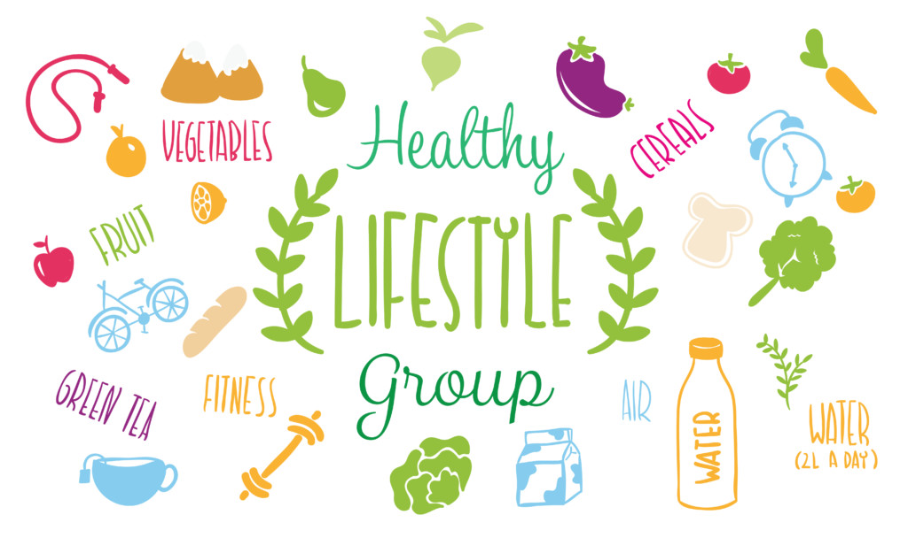

Where should I start my business?
As we have analyzed before in the dataset analysis, the business dataset is not complete. Here, we further show how unbalanced the dataset is. The following chart is the count of business grouped by states.

Let us look closer at one of the clusters. We choose a random city from the state with most records, Arizona, as our study target.

Tags of Restaurants on Yelp
Unlike what we throught before, it is actually not easy to find the restaurant that you like by categories on Yelp. Because the hierarchy of categories on Yelp are extremly messy, for example "Chinese, restaurant"/"restaurant, Chinese"/"Chinese, Food" are considered different categories. Even worse, As shown in the treemaps below, an extremly large number of categories appears only once, and even the largest categories has only a few hundred samples, which is obviously no meaningful result can be derived from. (That could also be that reason why you always cannot find your favourite food using Yelp's category search : p)
categories of samples in Yelp datasets

To make the category data useful for our analysis, we breaks the original hierarchy of the category labels into unordered tags For example, "Mexican, Southern America Fusion, Restaurant" are broken into tags "Mexicon", "Sourthern America Fusion", and "Restaurant", which helps identify the characteristic of these restaurants."
Word Cloud of Tags in Yelp dataset
Train rate prediction models with tags
Then we train a rate prediction models with tags we acquired from previous steps.

Here we use gradient boosting regression Trees model, and we pick this model for two reason:
First, it is simple but robust, as our purpose here is to find important tags for high rate restaurant rather than to actually build up an accurate rate prediction model, it is good to keep simple.
Second, it is understandable, unlike other complicated model such as neural network, GBRT is tree based regression model, which is intutive and easy for analysis

Validation loss of the data
From the validation loss we can see that the model did learn something from tags, which is good enough for us to tell the difference of the importance of these tags.
This is a figure showing the importance of different tags to the stars (rate) of restaurants on Yelp

Notice that this figure only shows the importances of a tag to the star of a restaurant, but not correlation, for example, tag fast food has very significant importance, it means knowing fast food is important for predicting the star but it does not nesscessarily means that fast food has strong linear-relationship with the star. And generaly speaking it is hard to tell the relationship as tags may not be independent to each other. However, by calculating the average star of restaurant with/without the tag, we can have a intutive guess about how tags affect the star of restaurants.
This is the figure showing an intutive relationship between tags and stars of restaurants

To draw a conclusion, if you are going to make your restaurant highly-rated on Yelp, the top 5 tags you should avoid will be fast food, chicken wings, drugstore, burgers, gas stations. And the top 5 tags you should have will be meat shop, food trucks, vegan, farmers market, breweries. The result shows that tags that related to unhealthy life will leads to bad rate, and tags that related to organic, homemade, healthy life will give people positive impression and lead to good rate. 